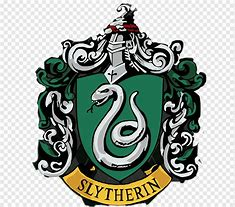

Salazar Sonserina nasceu por volta de 976, em uma família puro sangue, crescendo com um grande preconceito contra mestiços e trouxas. Durante a juventude, Salazar se tornou grande amigo de Godric Grifinória, e mais tarde, fundou Hogwarts ao seu lado. Sonserina era um bruxo extremamente poderoso, sendo conhecido como Língua de Cobra, por ser um ofidioglota. Salazar dizia que apenas bruxos de puro sangue deveriam ter o direito de estudar magia, coisa que seus amigos discordavam, escolhendo apenas esses bruxos para a sua casa, o que desencadeou uma grande briga, que resultou na saída de Sonserina. Antes de deixar o castelo, o bruxo deixou um basilisco colossal, escondido em uma das câmaras do castelo, profetizando que em algum momento, um de seus herdeiros iria acorda-lo, voltando a fúria do monstro contra todos os impuros da escola. Esse herdeiro, era Tom Riddle, vindo da família Gaunt. Ele abriu a câmara em duas oportunidades, trazendo o terror para Hogwarts. O Basilisco foi morto por Harry Potter, e a câmara secreta foi selada em definitivo. Inclusive, o medalhão usado por Salazar, acabaria se tornando uma das horcrux de Voldemort.
